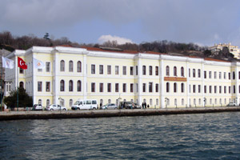
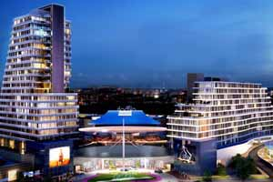

Elektrik proje
ve mühendislik
İhtiyaca ve standartlara uygun AG/OG projelendirme, danışmanlık ve teknik çözüm.
↗1985’TEN BERİ GÜVENLE ENERJİ VERİYORUZ
Elektrik mühendisliği, proje ve uygulamada 40 yılı aşan deneyim. Her ölçekte yapı için güvenilir çözümler.
ÇİÇEK ELEKTRİK SAN. VE TİC. LTD. ŞTİ.
1985’ten bu yana elektrik enerjisinin üretiminden dağıtımına uzanan projelerde yer alıyoruz. Deneyimli ekibimizle, standartlara bağlı ve uzun ömürlü sistemler tasarlıyor, kuruyor ve devreye alıyoruz.
↗UZMANLIK ALANLARIMIZ
Planlamadan devreye almaya, her aşamada aynı titizlik ve sorumluluk.
İhtiyaca ve standartlara uygun AG/OG projelendirme, danışmanlık ve teknik çözüm.
↗Orta gerilim kablolama, trafo merkezi kurulumu, işletme ve bakım hizmetleri.
↗Konut, ticari yapı ve sanayi tesislerinde uçtan uca elektrik uygulamaları.
↗Network ve fiberoptik altyapı, otomasyon, topraklama ve yıldırımdan korunma.
↗SEÇİLMİŞ İŞLER

EĞİTİM · İSTANBULGalatasaray ÜniversitesiOrta gerilim · Trafo merkezi ↗
TİCARİ · ESENYURTAkbatı AVM ve Yaşam MerkeziOG proje · Trafo merkezi ↗AYNI GRUPTA
Elektrik mühendisliği alanındaki deneyimimizin yanında, grup şirketimiz Orta Direk; aydınlatma, enerji nakil ve özel amaçlı direklerin üretim ve ihracatını gerçekleştiriyor.
İLETİŞİM
İhtiyacınızı anlatın. Deneyimli ekibimiz size en doğru yolu göstersin.
0212 676 40 00 ↗Hastane Mah. Şeyh Şamil Caddesi
No: 10/B, Hadımköy – Arnavutköy
İstanbul, Türkiye
+90 212 676 40 00
Faks: +90 212 676 40 29